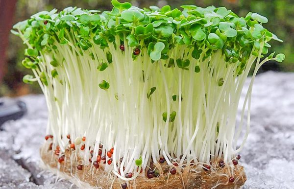

ГОРЧИЦА
Проростки горчицы нежные, сочные и пряные. Островатый, характерный привкус, напоминающий обычную горчицу делает её прекрасной освежающей добавкой к салатам и даже суши.
Микрозелень горчицы ускоряет метаболизм - способствует похудению и укрепляет стенки сосудов. укрепляет иммунитет, повышая силу и выносливость всего организма. Горчица является отличным антиоксидантом, усиливает аппетит, улучшает пищеварение. Помогает при инфекциях и простудных заболеваниях, а также в борьбе с мигренями. Облегчает ревматический артрит, способствует профилактике астмы. Микрозелень горчицы содержит большое количество аскорбиновой кислоты и рутина, тем самым замедляет старение и укрепляет стенки сосудов. Женщинам помогает облегчить симптомы менопаузы. Ростки горчицы обладают антибактериальными, противовоспалительными и антиканцерогенными свойствами. Микрозелень горчицы может быть полезна в профилактике и лечении рака, а также детокс программах. Микрозелень горчицы содержит в изобилии витамины (А, С, К, рутин, витамины B1, В2, B5, B6, B9), микро и макроэлементы, среди которых кальций, магний, марганец, фосфор, железо, цинк, медь, селен
Микрозелень горчицы также содержит Омега-3, Омега-6 жирные кислоты, пантотеновая кислота, эфирно-горчичные масла, пищевые волокна.